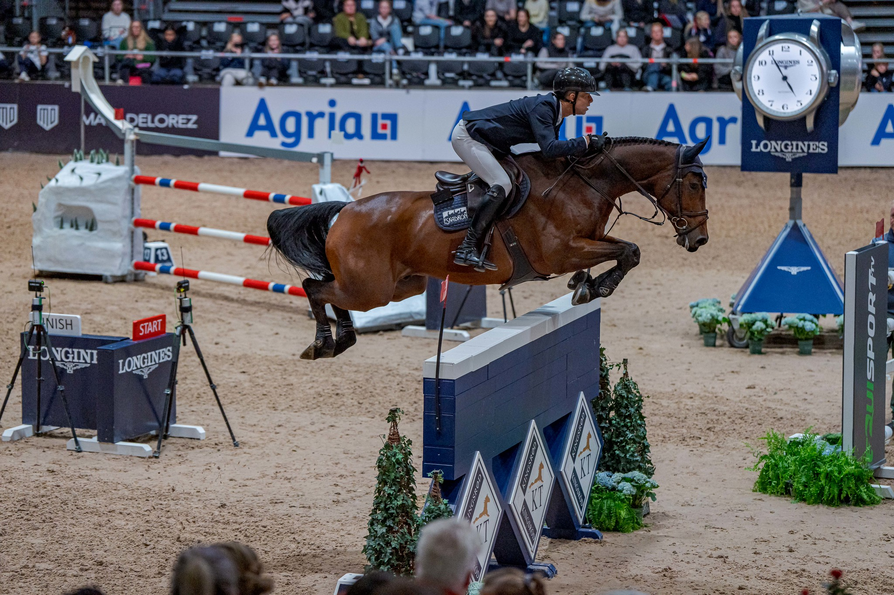

Josh Collins y «Cornel» ganan la clasificatoria de la Copa del Mundo en el Sydney International
El neozelandés Josh Collins se llevó este domingo la Chatham Park World Cup, clasificatoria de la Liga del Pacífico de la Longines FEI Jumping World Cup, disputada en el Sydney International Equestrian Centre de Horsley Park.

Uso editorial autorizado FEI
Es la segunda clasificatoria de la Copa del Mundo que Collins gana en apenas seis semanas, un balance que lo coloca al frente de la Liga del Pacífico en una temporada en la que la cita final es, de nuevo, Fort Worth.
El podio lo cerró Emma Collins —hermana del ganador— con Oaks Abracadabra. Jamie Kermond repitió protagonismo con el propio Yalambi's Lord Byron en segundo y con Tulara Lady Zirocca en quinto. En la lista del día figuraron también Phillip Lever (Billionaire NZPH), James Paterson-Robinson con Diamond B Vivienne, Lane Clarke con dos caballos y Amelia Douglass con Quel Filou 16.
El Sydney International Showjumping Classic se celebró entre el 22 y el 25 de octubre con el formato clásico de domingo grande: la clasificatoria de la Copa del Mundo cerrando la jornada, por delante del resto del cuadro. Para los binomios de la Liga del Pacífico es una de las citas con más puntos del calendario.
Por Lucía Valdeolmos